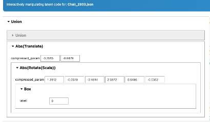
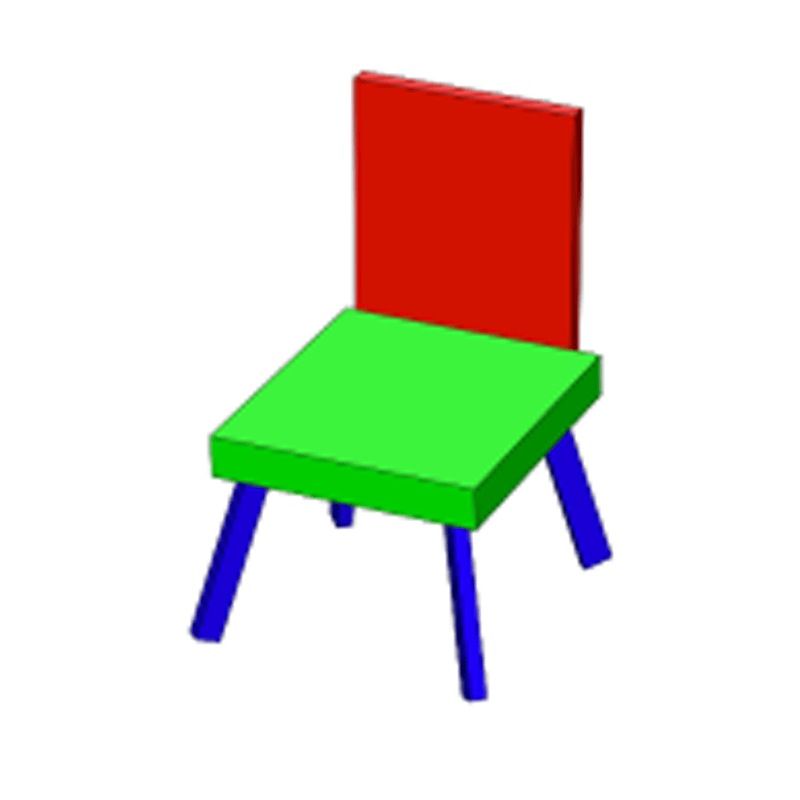

Results
Comparison of complexity reduction across methods. Each row (a–j) shows an input model from PartNet-Sym and its reconstructions using PCA, AE, and VAE across two hierarchical levels (L1, L2). The values below each model represent structural node counts and total parameter counts. The results demonstrate progressive compression from L1 to L2 and clear performance gains with latent models. Rows (c, f, h) highlight failure cases where aggressive compression causes geometric disconnection of chair components.

Latent space navigation. The VAE manifold enables smooth geometric transitions, ensuring stable variations during latent space traversal. Unlike standard Autoencoders, which can produce disjoint artifacts, the VAE preserves geometric stability by learning a continuous and stable latent manifold.

Software. Developed an interactive tool to demonstrate the practical application of these learned abstractions. It allows for the live manipulation of latent codes, enabling users to edit 3D shapes and their corresponding hierarchical abstractions in real time.

Interactive latent code manipulation.

Live editing example.